HTML
Časť použitého kódu HTML.
Vitaj a užívaj vrchol mojich inžinierskych schopností (⌐■_■).
Prejsť na projekty
Študent strojariny na VUT, nadšenec do adrealínových športov a ľudových tancov. #punkisnotdead

Tatry - Kriváň

Majster slovenska v zjazde 2022

Chorvátsko 2025
Pre programovanie stránky som zvolil základný programovacý prístup, a to pomocov HTML pre obsah a CSS pre pútavý vizuálny interface. Kód stránky je prehľadný a tak umožnuje jednoduchú orientáciu a následnú úpravu obsahu. Stránka je statická a nevyužíva žiadne frameworky ani knižnice. To umožnuje rýchle načítanie a jednoduchú údržbu. Hostovanie stránky je zabezpečené prostredníctvom GitHub Pages, čo poskytuje spoľahlivú a bezplatnú platformu. Odkaz pre kód na GitHub Pages tu.
Časť použitého kódu HTML.

Časť použitého kódu CSS.
Pomocou inkspace som premenil fotku svojho loga na bitmapový obrázok a následne na vektorový obrázok. Tento vektorový obrázok bol použitý na vyrezanie loga pomocou plotra. Vektorový obrázok zapespečuje presné a čisté rezy nakoľko predstavuje zoznam súradníc, ploter dokáže presne sledovať súradnice a vďaka tomu vytvoriť ostré a detailné rezy.

Zadávanie nastavení k rezaniu.

Ploter v akcii.
Vyrezané logo vo forme nálepky.
Pomocou laserovej rezačky som vyrezal z kartónu všetky potrebné diely pre model meča. Najskôr som si v CAD programe vytvoril presný 3D model, z ktorého som následne vygeneroval ploché výkresy a exportoval ich do formátu DXF. Tento formát je ideálny pre laserové zariadenia, pretože obsahuje presné vektorové krivky, ktoré rezačka dokáže bezchybne sledovať. Po vyrezaní dielov som musel celý meč poskladať ručne, pričom zadanie neumožňovalo použiť žiadne lepidlo ani iné spojovacie materiály. Všetky spoje preto museli byť navrhnuté tak, aby do seba presne zapadli. Vďaka presnému modelovaniu a čistým rezom z laseru vznikol pevný a detailný kartónový meč len pomocou mechanického zasúvania jednotlivých častí.

Modelovanie komponentov v CAD softvéri.

Zadávanie nastavení k rezaniu.

Laser v akcii.

Skladanie komponentov.

Vyrezaný meč z kartónu.
Vyrobil som funkčný model ženevského mechanizmu pomocou 3D tlače. Mechanizmus sa skladá zo štyroch dielov – podložky, dvoch voľne uložených koliesok a kolíka osadeného na presach. Všetky časti som navrhol v CAD softvéri, kde som riešil presné rozmery, vôľe a to, aby sa po vytlačení dali jednoducho zložiť a pohybovali sa plynulo. Hotové modely som exportoval vo formáte STL a vložil do PrusaSlicera, ktorý mi vytvoril G-code pre 3D tlačiareň. Tlač prebehla na tlačiarni Prusa, ktorá vytvorila pevné a presné plastové diely s celkovou hmotnosťou pod 100 g. Po vytlačení som všetky komponenty očistil, skontroloval a poskladal dokopy. Celý model zretelne ukazuje princíp činnosti ženevského mechanizmu.

Ženevský mechanizmus v CAD softvéri.

Uloženie hriadeľ/diera s presahom pre lepšie spojenie.

Zložený mechanizmus z tlačených častí.
V rámci projektu som pomocou ručného 3D skenera SimScan naskenoval zvolený diel, pričom som najskôr pripravil jeho povrch a rozložil referenčné body. Diel som skenoval z dvoch strán, aby som získal kompletnú geometriu, a následne som oba skeny zlúčil do jedného uceleného modelu. Po načítaní dát som odstránil otvory vzniknuté počas skenovania, vyhladil povrch a optimalizoval počet polygonov tak, aby bola výsledná sieť presná a čistá. Až po všetkých úpravách som model exportoval do formátu STL. Na finálnom modeli som zmeral obsah naskenovanej plochy, maximálny rozmer dielu a jeden doplnkový rozmer podľa vlastného výberu, aby som overil úplnosť a presnosť skenu.
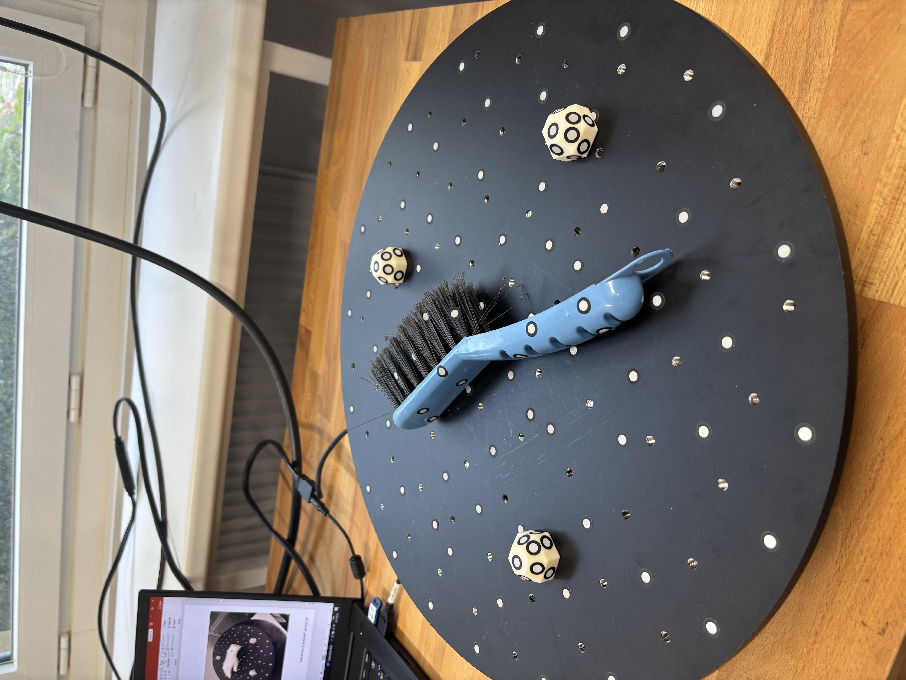
Smeták pripravený na 3D skenovanie.
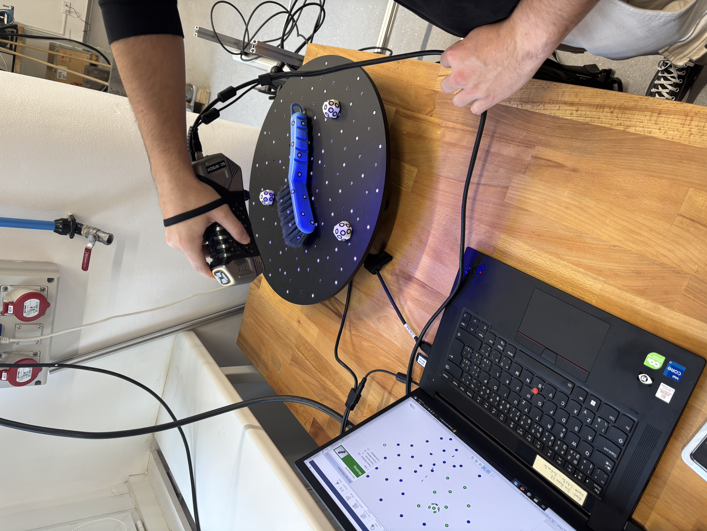
Skenovanie dielu pomocou SimScan.
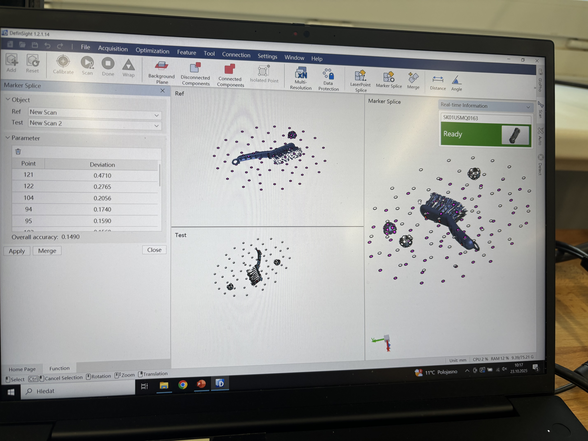
Dva naskenované pohľady pred zlúčením.
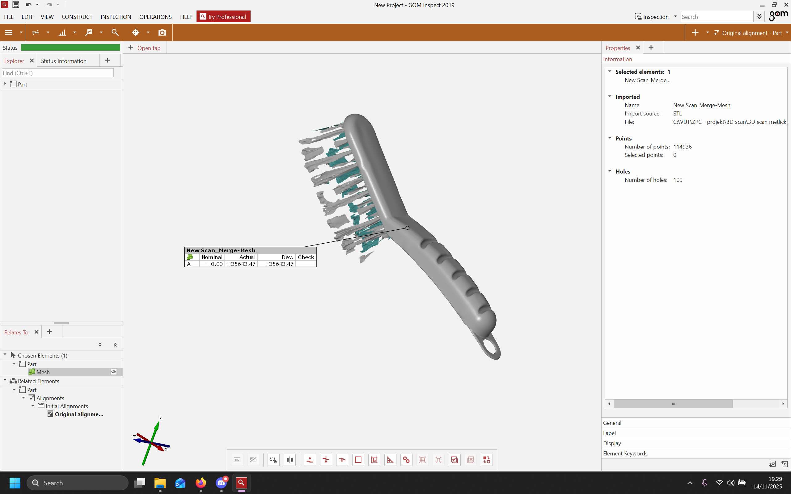
Obsah naskenovanej plochy v softvéri. Plocha: 35 643,47 mm².
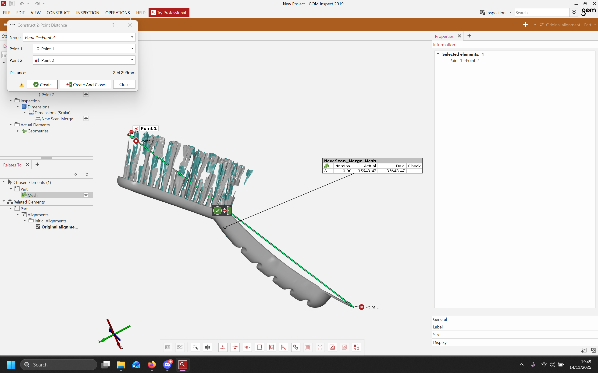
Hlavný rozmer naskenovaného dielu v softvéri: 294,299 mm.
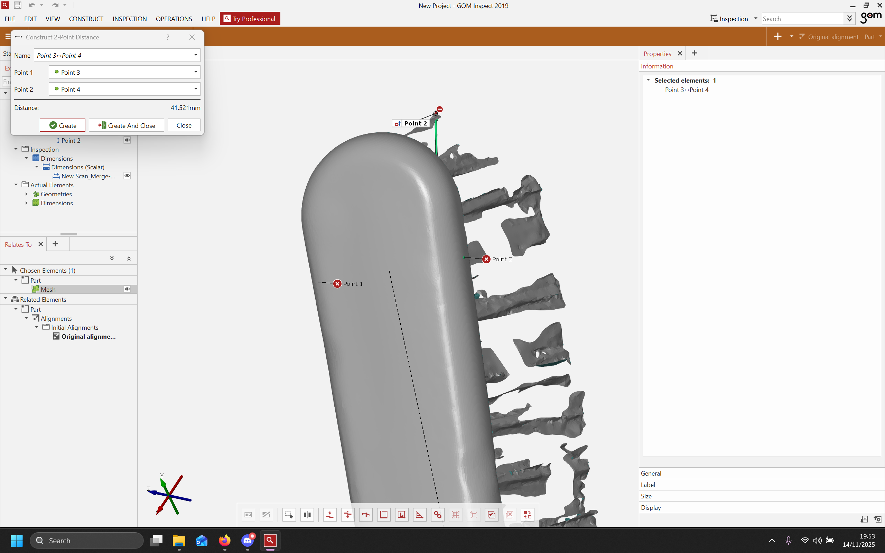
Ľubovoľný rozmer naskenovaného dielu v softvéri: 41,521 mm.
Pri tomto projekte som za pomoci Arduina vytvoril jednoduchú svetelnú animáciu, ktorá postupne rozsväcuje LED diódy v rôznych farbách. Cieľom bolo naučiť sa pracovať so základným zapojením na breadboarde, pochopiť princíp digitálnych výstupov a vytvoriť vlastnú animáciu riadenú programom. Najskôr som si pripravil breadboard, tri LED diódy a zodpovedajúce rezistory, aby som predišiel ich poškodeniu. Každú LED som pripojil na samostatný digitálny pin Arduina (11, 12 a 13) a ich katódy som spojil so spoločnou zemou. Po vytvorení zapojenia som v Arduino IDE napísal jednoduchý program, ktorý LED diódy postupne zapína a vypína v rôznych časových intervaloch. V programe som si definoval premennú animationSpeed, ktorá umožňuje meniť rýchlosť animácie bez nutnosti prerábať celý kód. Po nahratí programu do Arduina sa LED diódy rozsviecujú v cykle, čím vytvárajú plynulý svetelný efekt.
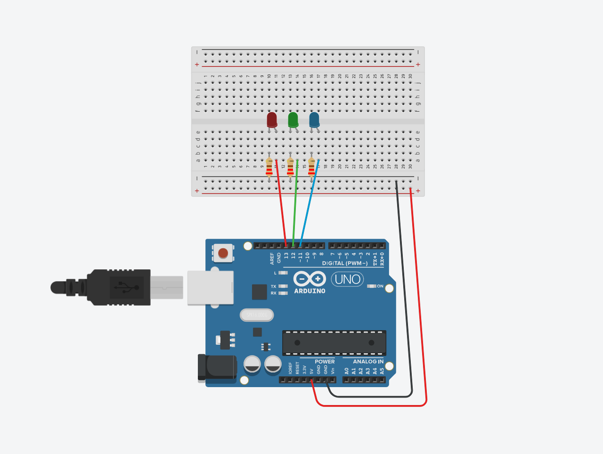
Prepojenie arduina s LED diódami na breadboarde.
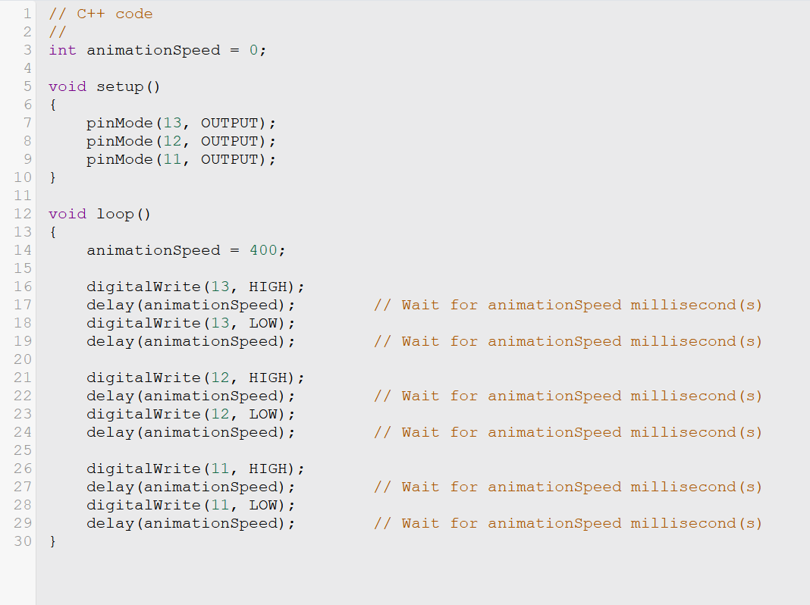
Arduino kód pre svetelnú animáciu.
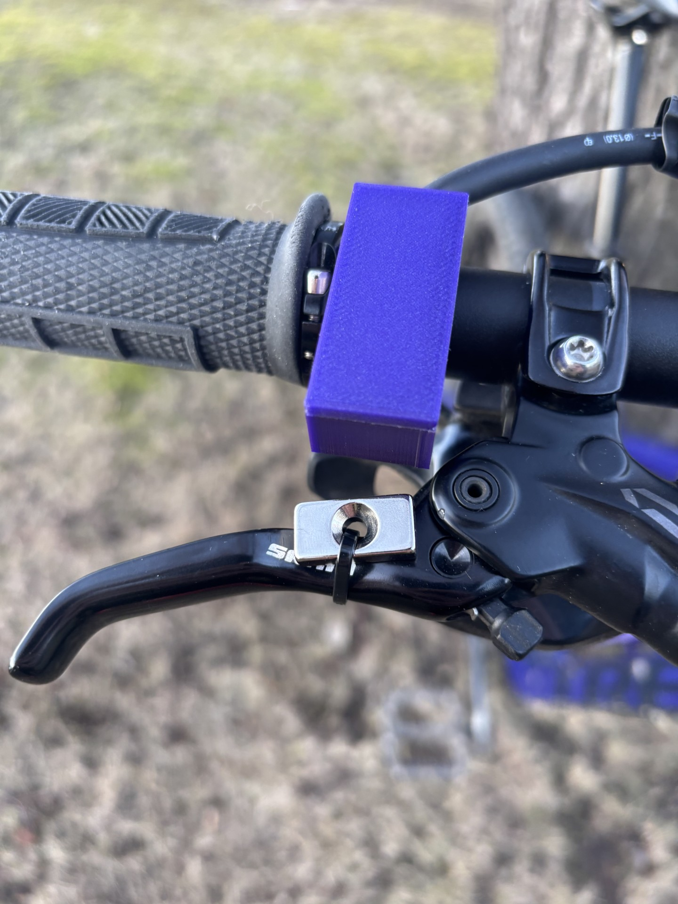
Cieľom môjho hlavného projektu je vytvoriť systém na monitorovanie a analýzu brzdového systému horského bicykla v reálnom čase.
V rámci projektu bol navrhnutý a realizovaný merací systém založený na platforme Arduino UNO R4 WiFi, ktorý zabezpečuje zber digitálnych signálov z Hallových senzorov, ich časovo synchronizované ukladanie na SD kartu a súčasné sprístupnenie dát prostredníctvom webového rozhrania cez WiFi. Jednotlivé hardvérové komponenty spolu komunikujú prostredníctvom digitálnych vstupov, SPI zbernice a bezdrôtovej sieťovej komunikácie. Systém umožňuje sledovanie nameraných hodnôt v reálnom čase aj spätnú analýzu historických meraní.
Program implementuje autonómny merací a dátovo-logovací systém založený na platforme Arduino UNO R4 WiFi. Systém periodicky sníma digitálne signály z dvoch Hallových senzorov, ukladá ich v pevnom časovom intervale na SD kartu a zároveň sprístupňuje namerané dáta prostredníctvom vstavaného webového servera. Jednotlivé softvérové bloky sú navrhnuté tak, aby zabezpečovali neblokujúci chod systému a paralelnú činnosť merania aj sieťovej komunikácie.
#include <SPI.h>
#include <SD.h>
#include <WiFiS3.h>
Knižnica SPI zabezpečuje hardvérovú komunikáciu
medzi mikrokontrolérom a SD kartou. Knižnica SD
implementuje súborový systém FAT a umožňuje vytváranie priečinkov
a súborov. Knižnica WiFiS3 riadi bezdrôtový modul
a umožňuje prevádzku HTTP servera.
const int hallSensorFrontLeft = 2;
const int hallSensorBackRight = 3;
const int chipSelect = 10;
Hallove senzory sú pripojené na digitálne vstupy mikrokontroléra
a sú konfigurované s interným pull-up rezistorom. Výstup senzora
je aktívny v logickej úrovni LOW, čo je zohľadnené pri čítaní vstupu.
SD karta je pripojená prostredníctvom SPI zbernice, kde pin
chipSelect slúži na výber periférie.
char ssid[] = "UNO_R4_HALL";
char pass[] = "12345678";
WiFiServer server(80);
Arduino pracuje v režime WiFi Access Point, čím vytvára vlastnú bezdrôtovú sieť. Webový server beží na štandardnom HTTP porte 80 a slúži na spracovanie požiadaviek z webového prehliadača klienta.
int lfb = 0;
int rbb = 0;
Premenné uchovávajú aktuálny stav Hallových senzorov, pričom hodnota
1 reprezentuje detekciu magnetického poľa a hodnota
0 jeho absenciu.
int findNextSessionNumber() {
int maxSession = -1;
File dir = SD.open("/OUT");
while (true) {
File e = dir.openNextFile();
if (!e) break;
if (e.isDirectory() && e.name()[0] == 'R') {
int n = atoi(e.name() + 1);
if (n > maxSession) maxSession = n;
}
e.close();
}
return maxSession + 1;
}
Funkcia prehľadáva adresár /OUT a analyzuje názvy
podpriečinkov typu Rxxx. Na základe najvyššieho
nájdeného čísla určí nové číslo session, čím zabezpečí jednoznačnosť
každého meracieho behu.
void setup() {
Serial.begin(9600);
pinMode(hallSensorFrontLeft, INPUT_PULLUP);
pinMode(hallSensorBackRight, INPUT_PULLUP);
SD.begin(chipSelect);
SD.mkdir("/OUT");
int s = findNextSessionNumber();
sprintf(sessionName, "R%03d", s);
sprintf(sessionFolder, "/OUT/%s", sessionName);
SD.mkdir(sessionFolder);
WiFi.beginAP(ssid, pass);
server.begin();
}
Po spustení systému sú inicializované digitálne vstupy, SD karta, adresárová štruktúra pre aktuálne meranie a WiFi prístupový bod. Server je následne pripravený prijímať HTTP požiadavky klientov.
if (now - lastSample >= sampleInterval) {
lastSample = now;
lfb = digitalRead(hallSensorFrontLeft) == LOW;
rbb = digitalRead(hallSensorBackRight) == LOW;
leftFile = SD.open("/OUT/.../LFB.TXT", FILE_WRITE);
leftFile.println(lfb);
leftFile.close();
rightFile = SD.open("/OUT/.../RBB.TXT", FILE_WRITE);
rightFile.println(rbb);
rightFile.close();
}
V pevnom časovom intervale systém načíta stav oboch Hallových senzorov a zapíše ich hodnoty do textových súborov. Každý riadok predstavuje jednu vzorku, čím vzniká časový záznam signálu.
if (req.indexOf("GET /live") >= 0) { ... }
if (req.indexOf("GET /runs") >= 0) { ... }
if (req.indexOf("GET /run?name=") >= 0) { ... }
Server rozlišuje jednotlivé HTTP endpointy. Požiadavka
/live poskytuje aktuálne hodnoty senzorov v reálnom čase,
/runs vracia zoznam uložených meraní a
/run?name= umožňuje načítanie historických dát konkrétneho behu.
client.println("Content-Type: text/html");
client.println(R"rawliteral(
...
)rawliteral");
HTML stránka je generovaná priamo mikrokontrolérom a odosielaná klientovi ako odpoveď HTTP servera. JavaScript v prehliadači zabezpečuje periodické načítavanie dát a ich grafické zobrazenie pomocou HTML5 canvas.
Táto časť projektu sa zameriava na offline spracovanie nameraných dát v prostredí MATLAB. Dáta sú uložené na SD karte, ktorá je po ukončení merania fyzicky vybratá z telemetrického zariadenia a vložená do počítača. MATLAB skript následne automaticky načítava uložené súbory, triedi jednotlivé meracie behy a vizualizuje časové priebehy signálov Hallových senzorov.
baseFolder = 'D:\OUT';
Ts = 0.1; % vzorkovací interval [s] (100 ms z Arduina)
Premenná baseFolder určuje koreňový adresár,
do ktorého je pripojená SD karta a kde sú uložené všetky meracie dáta.
Vzorkovací interval Ts je zhodný s intervalom použitým
v mikrokontroléri Arduino, čím je zabezpečená časová konzistentnosť
medzi meraním a jeho následným spracovaním.
dirs = dir(fullfile(baseFolder, 'R*'));
dirs = dirs([dirs.isdir]);
isSession = arrayfun(@(d) ...
~isempty(regexp(d.name, '^R\d{3}$', 'once')), dirs);
dirs = dirs(isSession);
Skript prehľadáva koreňový adresár SD karty a vyhľadáva podpriečinky
s názvami vo formáte Rxxx, ktoré reprezentujú jednotlivé
meracie behy. Regulárny výraz zabezpečuje, že sú spracované výhradne
korektné adresáre vytvorené telemetrickým systémom.
sessionNums = arrayfun(@(d) str2double(d.name(2:end)), dirs);
[~, idx] = sort(sessionNums);
dirs = dirs(idx);
Identifikátor meracieho behu je získaný z názvu adresára. Behom je následne priradené číselné označenie, podľa ktorého sú všetky merania zoradené chronologicky, čo umožňuje ich systematické spracovanie a prehľadnú analýzu.
for i = 1:length(dirs)
sessionName = dirs(i).name;
sessionPath = fullfile(baseFolder, sessionName);
Hlavná slučka skriptu zabezpečuje postupné spracovanie všetkých nájdených meracích behov. Každý beh je spracovaný nezávisle, čo umožňuje identifikovať prípadné chyby alebo nekompletné dáta bez ovplyvnenia ostatných meraní.
lfbFile = fullfile(sessionPath, 'LFB.TXT');
rbbFile = fullfile(sessionPath, 'RBB.TXT');
if ~isfile(lfbFile) || ~isfile(rbbFile)
warning('Preskakujem %s – chýba súbor', sessionName);
continue
end
lfb = load(lfbFile);
rbb = load(rbbFile);
Pre každý merací beh sú načítané textové súbory obsahujúce binárne hodnoty Hallových senzorov. V prípade chýbajúcich dát je daný beh automaticky preskočený, čím sa zvyšuje robustnosť spracovania.
N = min(length(lfb), length(rbb));
t = (0:N-1) * Ts;
lfb = lfb(1:N);
rbb = rbb(1:N);
Dĺžky signálov z oboch senzorov sú zosúladené na rovnaký počet vzoriek. Na základe vzorkovacieho intervalu je následne vytvorená časová os, ktorá umožňuje jednoznačné časové priradenie každej nameranej hodnoty.
figure('Name', sessionName, 'NumberTitle', 'off');
subplot(2,1,1)
stairs(t, lfb, 'LineWidth', 1.5)
subplot(2,1,2)
stairs(t, rbb, 'LineWidth', 1.5)
Pre každý merací beh je vytvorené samostatné grafické okno. Signály sú zobrazené pomocou schodového priebehu, ktorý zodpovedá diskrétnemu charakteru digitálneho merania. Obe osi sú prepojené, čo umožňuje synchronizované porovnávanie signálov v čase.
MATLAB skript zabezpečuje automatizované spracovanie dát získaných z telemetrického systému. Vďaka jednotnej adresárovej štruktúre a pevne definovanému vzorkovaciemu intervalu je možné dáta efektívne analyzovať, vizualizovať a porovnávať jednotlivé meracie behy v offline prostredí.
Nasledujúci obrázok znázorňuje typický výstup MATLAB skriptu pre spracovanie dát z telemetrického systému. Zobrazené sú časové priebehy signálov Hallových senzorov LFB a RBB pre vybraný merací beh, vykreslené na spoločnej časovej osi.
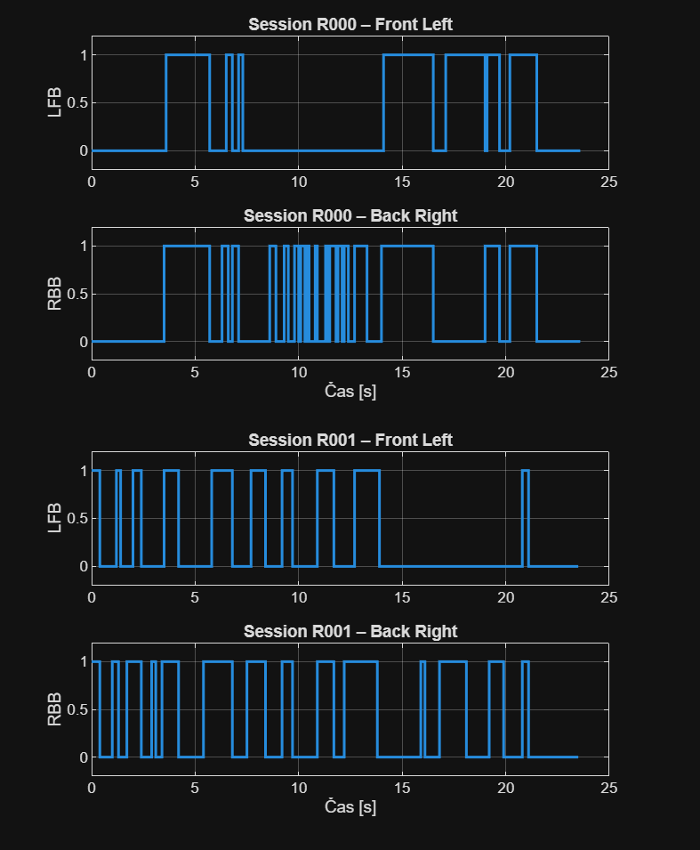
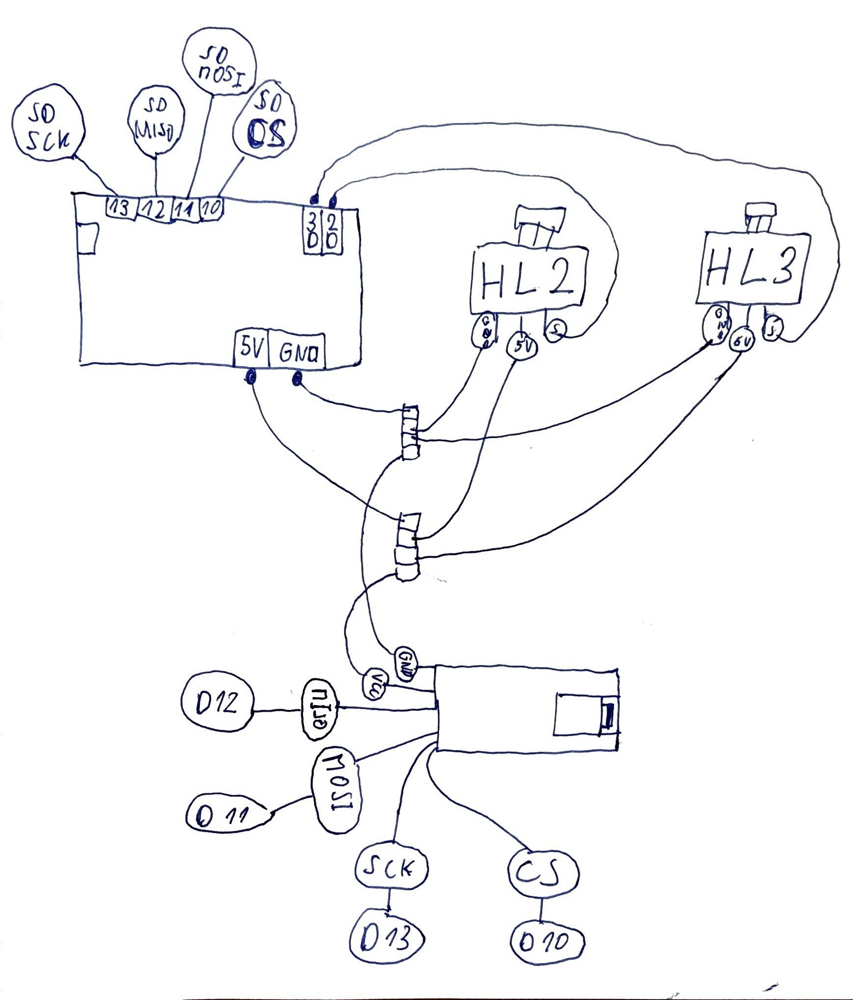
Zobrazená schéma predstavuje hardvérové zapojenie telemetrického meracieho systému, ktoré priamo zodpovedá použitému softvéru. Systém pozostáva z mikrokontroléra Arduino UNO R4 WiFi, dvoch Hallových senzorov (HL2 a HL3) a pamäťovej SD karty. Zapojenie umožňuje spoľahlivý zber digitálnych signálov, ich ukladanie na SD kartu a následné spracovanie nameraných dát.
Arduino slúži ako centrálna riadiaca jednotka systému. Digitálne vstupy D2 a D3 sú použité na čítanie výstupov Hallových senzorov, čo korešponduje s definíciou vstupných pinov v programovom kóde. Napájacie piny 5 V a GND zabezpečujú spoločné napájanie všetkých pripojených prvkov.
Hallove senzory sú pripojené tromi vodičmi – napájanie (5 V), zem (GND) a signál. Signálové výstupy sú vedené priamo na digitálne vstupy Arduina. Senzory pracujú v spínacom režime, pričom zmena magnetického poľa sa prejaví zmenou logickej úrovne signálu.
Napájanie 5 V a GND je z Arduina rozvedené pomocou spoločného rozbočovacieho bodu k obom Hallovým senzorom. Takéto riešenie zabezpečuje jednotnú referenčnú zem a stabilné napájanie všetkých snímacích prvkov.
SD karta je pripojená k Arduinu prostredníctvom SPI zbernice. V schéme sú vyznačené signály MOSI (D11), MISO (D12), SCK (D13) a CS (D10). Toto zapojenie priamo zodpovedá softvérovej konfigurácii systému, kde je pin D10 použitý ako výberový signál pre SD kartu.
Navrhnutá schéma zapojenia zabezpečuje synchronizovaný zber dát z Hallových senzorov, ich archiváciu na SD karte a ďalšie spracovanie v online aj offline režime. Zapojenie je prehľadné a modulárne, čo umožňuje jednoduchú údržbu, diagnostiku a prípadné rozšírenie systému.
Nasledujúca časť prezentuje jednotlivé 3D modely mechanických dielov telemetrického systému. Modely boli navrhnuté s cieľom zabezpečiť ochranu elektroniky, stabilné uchytenie Hallových senzorov a jednoduchú montáž celého zariadenia. Každý diel plní presne definovanú mechanickú a funkčnú úlohu v rámci celku.
Hlavný box slúži ako ochranný kryt pre riadiacu elektroniku, mikrokontrolér a SD modul. Konštrukcia zabezpečuje mechanickú ochranu pred poškodením, čiastočnú ochranu proti nečistotám a umožňuje vedenie káblov k senzorom a napájaniu.
Tento diel je určený na presné a stabilné uchytenie Hallovho senzora. Zabezpečuje jeho správnu polohu voči snímanému magnetickému poľu a zároveň chráni senzor pred mechanickým poškodením počas prevádzky.
Vrchnák slúži na uzatvorenie boxu Hallovho senzora. Zaisťuje fixáciu senzora v požadovanej polohe a chráni ho pred vonkajšími vplyvmi, ako sú prach a vlhkosť.
Uzáver hlavného boxu zabezpečuje uzatvorenie elektronickej časti zariadenia. Konštrukcia umožňuje opakovanú demontáž pre servisné zásahy, pričom zachováva dostatočnú pevnosť a stabilitu spojenia.
Podložka slúži ako montážny a stabilizačný prvok hlavného boxu. Umožňuje pevné uchytenie telemetrického systému ku konštrukcii rámu alebo inému nosnému prvku a zároveň znižuje prenos vibrácií na elektronické komponenty.
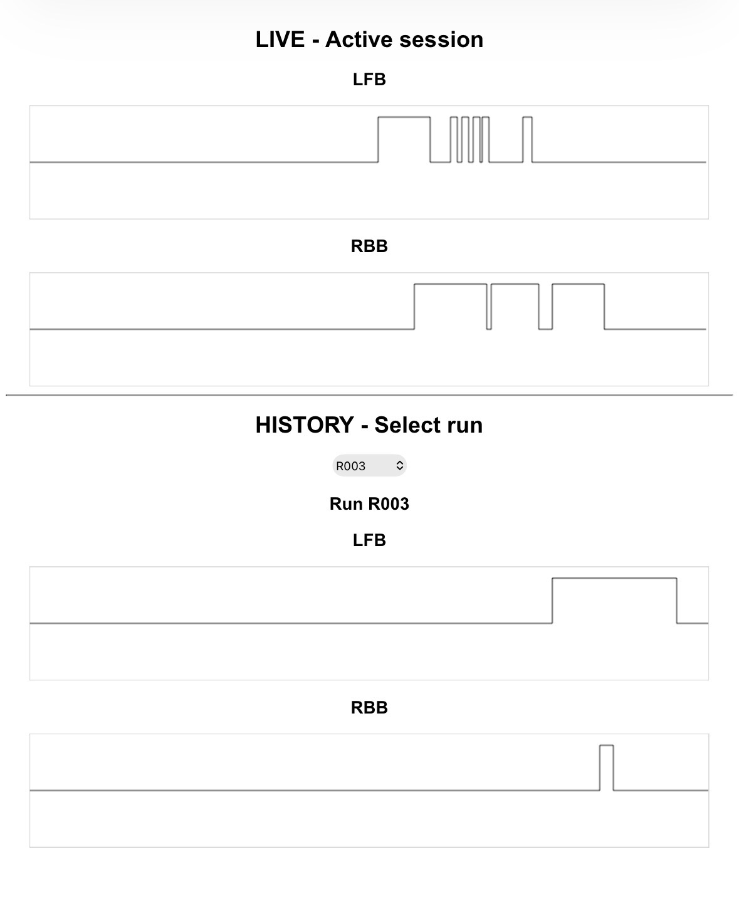
Používateľské rozhranie je realizované ako jednoduchá webová aplikácia, ktorá je generovaná priamo mikrokontrolérom Arduino a zobrazovaná v štandardnom webovom prehliadači. Rozhranie umožňuje sledovanie stavov Hallových senzorov v reálnom čase, ako aj spätnú analýzu historických meraní uložených na SD karte.
Horná časť rozhrania zobrazuje aktuálne prebiehajúce meranie. Signály zo senzorov LFB a RBB sú vizualizované vo forme schodových priebehov, ktoré zodpovedajú diskrétnemu charakteru digitálneho snímania. Grafy sú priebežne aktualizované v pevnom časovom intervale, čo umožňuje okamžitú kontrolu funkčnosti systému počas prevádzky.
Spodná časť rozhrania slúži na zobrazenie historických meraní.
Používateľ si môže z rozbaľovacieho zoznamu zvoliť konkrétny
merací beh označený identifikátorom Rxxx.
Po výbere sú zobrazené priebehy oboch senzorov
synchronizované na spoločnej časovej osi.
Nasledujúca prezentácia dokumentuje finálnu podobu telemetrického systému po jeho mechanickej montáži na bicykel. Zobrazené sú jednotlivé krabičky elektroniky a senzorov v reálnej prevádzke.